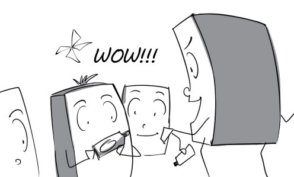
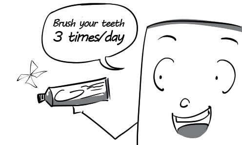
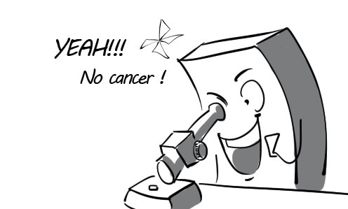
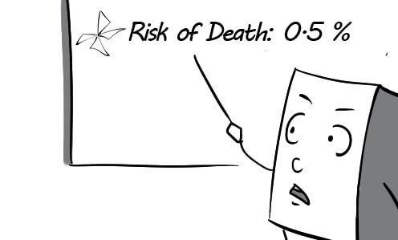

available: Rihanna's new album will be available in every single store on 14/2/2012.
(sẵn có (để dùng)) adj

broaden: The band wants to broaden audience by holding a world tour next year.
(mở rộng) v

category: He was nominated in many categories for the 52nd Grammy Awards.
(hạng mục) n

disparate: These two singers have totally disparate music styles.
(khác hẳn nhau) adj
divide: Music can be divided into many different genres.
(phân chia) v

favor: Tom can play many instruments but he tends to favor electric guitar.
(yêu thích) v

instinct: Michael started to create music when he was a child, it seemed an instinct.
(bản năng) n

prefer: My little son prefers playing piano to playing with his toys.
(thích hơn) v

reason: The reason why the band had to cancel their show is that all their instruments were damaged.
(lý do) n

relaxation: Listening to classical music while sleeping in a hammock provides wonderful relaxation.
(sự thư giãn) n

taste: Everyone is shocked by his strange taste in music.
(khiếu thẩm mỹ) n

urge: His friends urged him to take part in the singing competition.
(thúc giục) v

acquire: The museum acquired the world's first full dinosaur skeleton during heavy biding.
(giành được) v

admire: The rising painter is admired by many people for his real talent.
(ngưỡng mộ) v

collection: The professor is presenting the museum's dinosaur bone collection to visitors.
(bộ sưu tập) n

criticism: According to the criticism of experts, this ancient porcelain vase is fake.
(sự phê bình) n

express: The landscape painting expresses the artist's love for nature.
(thể hiện) v
fashion: Everyone was amazed with Vivien Westwood's latest fashion collection.
(thời trang) n

leisure: People with too much leisure always find their lives so boring.
(thời gian nhàn rỗi) n

respond: The manager does't know how to respond to reporters' questions about the disappearance of a Van Gogh painting.
(trả lời) v

schedule: The teacher scheduled our museum field trip in detail.
(lên lịch trình) v

significant: This diamond is so significant that the museum have it protected by two guards all the time.
(quan trọng) adj
specialize: This natural history museum specializes in dinosaurs.
(chuyên về) v

spectrum: This museum covers a broad spectrum of classical and modern sculptures.
(nhiều loại) n
assignment: The cameraman had to pay full attention when he was on assignment.
(việc được giao) n
choose: He wonders if he should choose a megaphone or a microphone to make his speech.
(lựa chọn) v

constantly: The reporter constantly runs around to collect the news for his articles.
(liên tục) adv
constitute: Good graphic design and interesting content constitute a successful website.
(cấu thành, tạo thành) v

decision: The director is the only one who can make the decision to shoot a scene.
(quyết định) n

disseminate: The news about the severe earthquake is disseminated across the world.
(phổ biến) v

impact: Commercials have a huge impact on consumers.
(ảnh hưởng) n

in-depth: This channel provided in-depth coverage of the tragic car accident.
(toàn diện) adj

investigate: The reporter tried his best to investigate the facts about the political scandal.
(điều tra) v

link: There's a family link between the cameraman and the new reporter.
(mối liên hệ) n

subscribe: Mary subscribes to a fashion magazine so that it will be delivered to her house weekly.
(đặt mua báo) v
thorough: The reporter was thorough in the preparation for his business trip.
(hoàn toàn, kỹ lưỡng) adj

annually: Peter get a health checkup annually to find problems before they start.
(hàng năm) adv

appointment: Mr Green set up a doctor's appointment at 7 a.m tomorrow.
(cuộc hẹn ) n

assess: Mr Cameron just had a doctor assess his health because he felt a little sick.
(đánh giá) v

diagnose: The doctor is checking Tom's symptoms to diagnose his illness.
(chẩn đoán) v

effective: The medicine her doctor prescribed was really effective, her headache is completely gone now.
(hiệu quả) adj

instrument: Doctors use medical instruments in the diagnosis and treatment of medical conditions.
(dụng cụ) n

manage: Although the hospital was overcrowded, the staff still managed to take good care of their patients.
(xoay sở) v

prevent: You should wear warm clothes to prevent flu in the winter.
(ngăn ngừa) v

recommendation: The doctor gave me some recommendations to help me improve my health.
(lời khuyên) n
record: Medical records are filed in alphabetic order in this hospital.
(hồ sơ) n
refer: My friend referred me to Doctor Albert because of his reputation.
(chỉ dẫn (ai) đến ) v

serious: The doctor wished to make a serious conversation with his patient.
(nghiêm túc) adj

aware: The school carried out this campaign to make students aware of the importance of brushing teeth properly.
(nhận thức ) adj

catch up: My assistant is catching me up on tomorrow's schedule.
(cập nhật) v

distraction: The football match gave the dentist a distraction from the dental procedure.
(sự sao lãng) n

encouragement: The dentist gave me encouragement to brush my teeth three times a day.
(sự khuyến khích) n

evident: His tooth decay is so evident that the dentist doesn't have to examine him.
(rõ rệt) adj

habit: He has a habit of eating chocolate at night which is not good for his teeth.
(thói quen) n

illuminate: The dentist turned on more lights to illuminate the patient's mouth.
(chiếu sáng) v

irritate: Peter's gums are irritated by the oral antiseptic.
(làm rát) v

overview: The dentist did a overview of my teeth and fortunately they were really good.
(tổng quan) n

position: The dentist determined the position of his tooth decay.
(vị trí) n

regularly: Thomas goes to see his dentist for a checkup regularly.
(đều đặn) adv

restore: The dentist succeeded in restoring the whiteness of my teeth.
(khôi phục) v

allow: The nurse allows Tom to enter the doctor's office now.
(cho phép) v

alternative: Doctors will offer the patient an alternative solution if he isn't comfortable with the wheelchair.
(thay thế) adj

aspect: The greatest aspect of this aspirin is that it doesn't make you sleep.
(khía cạnh, mặt) n

concern: My doctor tells me to call him if I have any health concerns.
(sự lo ngại) n

emphasize: The nurse emphasized that I must bring my insurance card when coming back next week.
(nhấn mạnh) v
incur: My insurance plan just covers 20% of expenses, I have to incur the rest.
(gánh chịu) v

personnel: The personnel is divided into many departments. Each department undertakes specific tasks.
(nhân viên) n

policy: Everyone is happy with the new health policy issued by the government.
(chính sách) n

portion: I spend a portion of my income on health care.
(phần chia) n

regardless: The doctor still treats me well regardless of the fact that I don’t have health insurance.
(bất chấp) adv

salary: Andrew receives his salary on the 22nd of the month.
(tiền lương) n

suit: This type of insurance doesn’t suit me, I don't have enough money to buy it.
(hợp với) v

admit: He was immediately admitted to the hospital after a severe car accident.
(nhận vào) v
authorize: Congratulations! You are authorized to go home now.
(chấp thuận) v

designate: This sign designates the forbiddance of smoking in the hospital.
(chỉ rõ) v

escort: The patient doesn't need an escort to take him to the bathroom.
(người đi theo) n

identify: His father can hardly identify him because he was damaged severely in the accident.
(nhận diện) v

mission: Ambulance drivers always try their best to fulfill their missions.
(nhiệm vụ) n
permit: The nurse permits me to take a walk around the hospital.
(cho phép) v

pertinent: The doctor needs pertinent information about the patient's health record right away.
(có liên quan) adj

procedure: Everyone has to follow the procedure regulated by the hospital.
(quy trình) n

result: The patient was really shocked when he saw his test results.
(kết quả) n

statement: I am reading my bank statements to see how much I spent this month.
(bản kê) n
usually: Doctors are usually in a rush because the hospital is overcrowded.
(thường thường) adv

consult: You should consult with your doctor before taking new medicine.
(tham khảo) v
control: The purchasing of medicine is controlled by the senior pharmacist.
(kiểm soát) v
convenient: It is more convenient to carry out surgery when the patient is unconscious.
(thuận lợi) adj

detect: The doctor examined his patient to detect if he had cancer.
(tìm ra) v

factor: Medicinal herbs are factors that contribute to the effectiveness of this medicine.
(nhân tố) n

interaction: The interaction of the two medications I am taking always make me sleepy.
(sự tương tác) n

limit: The pharmacist set a limit on the amount of pills I can take everyday.
(giới hạn) n

monitor: The nurse carefully monitors temperature of the patient.
(giám sát) v

potential: This disease should be taken seriously due to its potential death risk.
(tiềm tàng) adj

sample: The pharmacist is testing a sample of the new medicine.
(mẫu thử) n

sense: The doctor had a good sense about what disease he had.
(khả năng phán đoán) n

volunteer: Alex volunteered to donate his blood for a community supply.
(tình nguyện) v